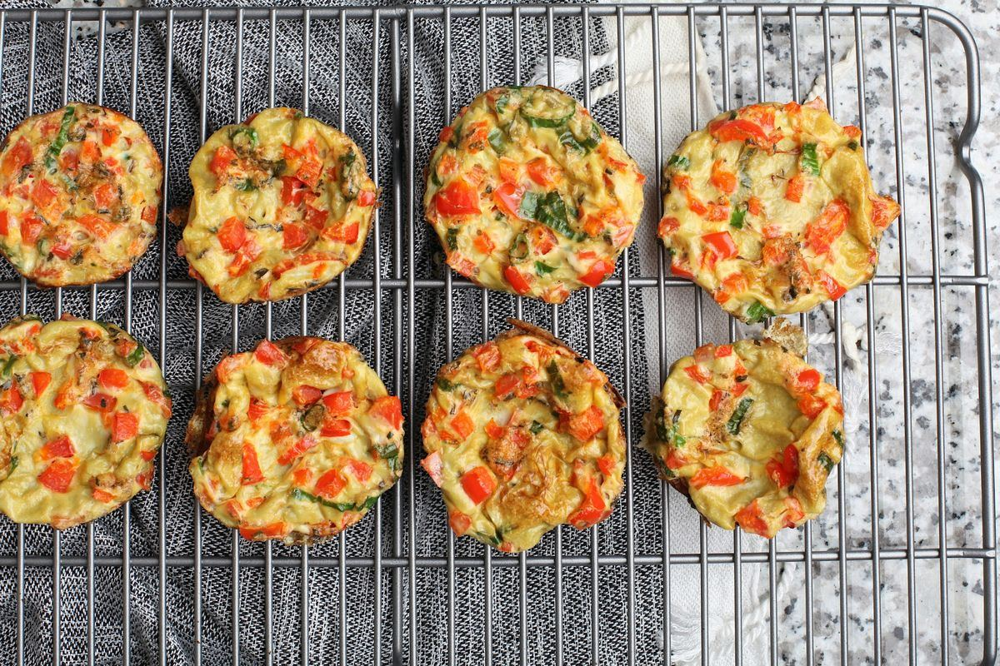

Meal ideas
High Protein Breakfast Ideas You Can Make Ahead

This guide contains affiliate links. If you buy through them, Holistic Life may earn a small commission at no extra cost to you. How we use affiliate links.
Quick answer
- A high protein breakfast is built around a protein food such as eggs, yogurt, cottage cheese, beans or nut butter.
- Here are five breakfasts to make ahead on Sunday. Pick two of them for the week.
- About 45 minutes covers a pan of egg muffins and four jars of overnight oats, and most of it is oven time.
- Baked egg dishes keep 3 to 4 days in the refrigerator, so the plan runs Monday to Thursday. Freeze what you will not eat in time.
Mornings are rushed, and breakfast gets skipped. A high protein breakfast is easier when it is already made. Here are five breakfasts you can make ahead on Sunday and eat Monday to Thursday.
You do not make all five. Pick two for the week, and you have a make ahead breakfast plan that takes about 45 minutes, most of it oven time. Sunday is the example, but any day off works, which helps if you work shifts.
What makes a breakfast high protein?
A protein food sits at the center of the meal. MedlinePlus, from the National Library of Medicine, lists animal sources such as meat, fish, milk and eggs, and plant sources such as soy, beans, nut butters and some grains. It calls low fat dairy a good source too, and it says you do not need animal products to get all the protein you need.
You do not need to count anything.
1. Cottage cheese egg muffins
Ingredients (makes 12): 8 eggs, 1 cup cottage cheese, about 1 cup chopped vegetables (such as spinach and bell pepper), half a cup of grated cheese, salt and pepper.
- Heat the oven to 350°F. Grease a 12-cup muffin pan well, because egg sticks.
- Divide the vegetables and cheese among the cups.
- Whisk the eggs with the cottage cheese and pour until each cup is about three quarters full.
- Bake 20 to 25 minutes, until set in the center and 160°F on a food thermometer.
Swap: Use any vegetable you like. Cook watery ones, such as mushrooms or zucchini, first.
2. Overnight oats with Greek yogurt
For each jar (make four at once): half a cup of rolled oats, half a cup of milk, a quarter cup of plain Greek yogurt, 1 tablespoon of chia seeds (optional), a pinch of cinnamon.
- Stir everything together in the jar.
- Put the lid on and refrigerate overnight.
- In the morning, top with berries and a spoonful of peanut butter.
Swap: Use soy milk and soy yogurt for a dairy-free jar.
3. Freezer breakfast burritos with black beans
Ingredients (makes 6): 8 eggs, one 15-ounce can of black beans (drained and rinsed), 1 cup grated cheese, a few spoonfuls of salsa, 6 large flour tortillas.
- Scramble the eggs until firm, then stir in the beans to warm them.
- Cool the filling for about 10 minutes, so the tortillas do not turn soggy.
- Fill each tortilla with eggs and beans, cheese and a spoonful of salsa. Roll, wrap in foil or parchment, and freeze in a freezer bag.
- To eat, unwrap one, wrap it in a paper towel and microwave from frozen, turning once, until hot all the way through (165°F).
Swap: Leave out the eggs and use roasted sweet potato cubes with the beans.
4. Cottage cheese bowls, sweet or savory
No cooking. For each jar: about three quarters of a cup of cottage cheese.
- Sweet: add berries, a drizzle of honey and chopped nuts.
- Savory: add cucumber, cherry tomatoes and black pepper.
- Keep crunchy toppings in a small bag until morning.
Swap: Use plain Greek yogurt in place of the cottage cheese.
5. Peanut butter banana baked oatmeal
Ingredients (one 8-inch dish, 6 squares): 2 cups rolled oats, 1 teaspoon baking powder, 1 teaspoon cinnamon, a pinch of salt, 2 ripe bananas (mashed), 2 eggs, 1 and a half cups of milk, a third of a cup of peanut butter.
- Heat the oven to 350°F.
- Mix the wet ingredients, then stir in the dry.
- Pour into a greased dish and bake 30 to 35 minutes, until set in the center and 160°F.
- Cool, then cut into 6 squares.
Swap: Use almond butter or sunflower seed butter.
A 45-minute batch order
This order is for the egg muffins plus the overnight oats.
- Heat the oven to 350°F and grease the muffin pan.
- Fill the cups with vegetables and cheese.
- Whisk and pour the eggs. Bake 20 to 25 minutes.
- While they bake, stir four jars of oats and refrigerate them.
- Take the muffins out when they are set and at 160°F. Cool for 10 minutes.
- Pack and refrigerate within 2 hours of baking. Freeze Thursday's share.
The baked oatmeal shares the oven and adds 10 to 15 minutes. The burritos are a second session of about 25 minutes.
How long each one keeps
| Breakfast | Refrigerator | Freezer |
|---|---|---|
| Egg muffins | 3 to 4 days | 2 to 3 months |
| Baked oatmeal | 3 to 4 days | 2 to 3 months |
| Breakfast burritos | 3 to 4 days | 3 to 4 months |
| Overnight oats | Up to 4 days in this plan | Not frozen in this plan |
| Cottage cheese bowls | Up to 4 days in this plan | Not frozen in this plan |
The first two rows use FoodSafety.gov's line for baked casseroles made with eggs, because the egg muffins and the baked oatmeal are both baked egg dishes. The burrito figures are the USDA's figures for leftovers.
Those figures are written for cooked food. This guide holds the two no-cook jars to the same four days, so one rule covers the whole fridge. The date on the milk, yogurt or cottage cheese tub still applies if it comes sooner.
Thursday is day four, the end of the window, so freeze Thursday's egg muffins or oatmeal square on Sunday. Move them to the refrigerator on Wednesday night.
Gear that helps
Start with what you have. These four items make the batch easier.
12-cup muffin pan
The egg muffins bake in this pan, and one batch fills all twelve cups. A good nonstick coating keeps the egg from sticking.
What to look for
- 12 cups, enough for one full batch
- A nonstick coating, because egg sticks
- Steel made to resist warping
Options that fit
- Wilton Gold non-stick muffin pan, 12-cup Carbon steel with an easy-release coating, made to resist warping (paid link)
- Rachael Ray nonstick muffin pan with grips, 12-cup Heavy gauge steel, with grippy handles on both ends (paid link)
See more muffin pans on Amazon (paid link)
Wide-mouth pint jars with lids
The overnight oats and the cottage cheese bowls both go in jars. A wide mouth makes them easy to fill, eat from and wash.
What to look for
- A wide mouth, so a spoon reaches the bottom
- Pint size, 16 ounces
- Lids included
Options that fit
- NETANY glass jars with airtight lids, 16 oz, 6-pack Six stackable jars with airtight lids, listed for overnight oats (paid link)
- SEWANTA wide mouth mason jars with lids and bands, 16 oz, 5-pack Five jars with measurement marks pressed into the glass (paid link)
See more wide-mouth jars on Amazon (paid link)
Glass meal prep containers
Egg muffins and oatmeal squares stack neatly in these. Glass goes from the freezer to the microwave without a change of dish (check whether the lid can too).
What to look for
- Locking lids with an airtight seal
- Glass that can go in the microwave and the freezer
- One-meal size, about 3 to 4 cups each
Options that fit
- M MCIRCO glass meal prep containers, 30 oz, 8-pack Eight containers with snap-lock lids and silicone seals (paid link)
- Rubbermaid Brilliance glass containers, 3.2-cup, 4-count Four containers with latching airtight lids, for a smaller batch (paid link)
See more glass containers on Amazon (paid link)
8-inch square baking dish with a lid
The baked oatmeal is cut into six squares right in this dish. With a lid, it goes straight into the fridge.
What to look for
- 8 by 8 inches
- Glass that is safe in the oven and the freezer
- A lid, so the dish goes straight into the fridge
Options that fit
- Pyrex Deep 8x8 glass baking dish with lid A deeper dish for a preheated oven or the freezer, with a fitted lid (paid link)
- OXO Good Grips 8 x 8 inch glass baking dish with lid Borosilicate glass made to go from the freezer to the oven (paid link)
See more baking dishes on Amazon (paid link)
When breakfast prep does not happen
Some weeks it will not happen. Hard-cooked eggs are a simple fallback, and FoodSafety.gov's chart gives them 1 week in the refrigerator. For lunches and dinners, see our high protein meal prep for beginners and these high protein dinners. If you pack food for long shifts, see meal prep for 12-hour shifts.
Frequently asked questions
How long do make-ahead breakfasts keep in the fridge?
FoodSafety.gov's chart gives baked casseroles made with eggs 3 to 4 days in the refrigerator, and this guide uses that for the egg muffins and the baked oatmeal. The USDA gives the same 3 to 4 days for leftovers. The two no-cook jars are held to four days as well. That part is this guide's own rule, not a figure from a source.
Can I freeze egg muffins and breakfast burritos?
Yes. The same chart lists 2 to 3 months in the freezer for baked casseroles made with eggs, and the USDA lists 3 to 4 months for leftovers. The USDA says it is safe to reheat frozen leftovers without thawing, though it takes longer. Reheat them to 165°F.
How much protein do I need at breakfast?
MedlinePlus says the amount of protein you need depends on your overall calorie needs. A dietitian or your clinician can give you a figure that fits you. You do not need to count anything to use these recipes.
Sources
Save this guide for later
Tap a pin to save it to your Pinterest boards.